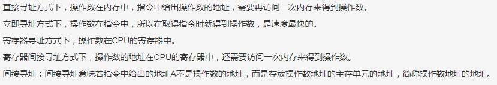

软考初级（程序员）
知识点
内聚类型：
- 信息内聚：信息内聚模块完成多个功能，各个功能都在同一个数据结构上操作，每一项功能有一个唯一的入口点
- 逻辑内聚：若一个模块把几种相关的功能组合在一起，每次被调用时，由传送 给模块的判定参数来确定该模块应执行哪一种功能，则该模块的内聚类型为逻辑内聚
- 过程内聚：若一个模块内的处理是相关的，而且必须以特定次序执行，则称这个模块为过程内聚模块
- 功能内聚：若一个模块中各个部分都是完成某一个具体功能必不可少的组成部分，则该模块为功能内聚模块
分层数据流图：是结构化分析方法的重要组成部分，顶层数据流图表示目标系统与外部环境的关系，仅有目标系统一个加工。
数据库modify和set
哈夫曼编码：无损压缩编码技术
奇偶校验法：
接收端收到这组二进制数据后，则校验“1”的个数是否为奇数，从而确定传输代码的正确性。偶校验以此类推。奇偶校验只能检测出错误而无法确定错误数据位具体是哪一位，因此进行修正，同时虽然2位及以上的偶数位同时发生错误的概率相当低，但奇偶校验却无法检测出偶数个数据位错误。奇偶校验实现简单，具有相对理想的检错能力，因此得到广泛使用。
APIPA（Automatic Private IP Addressing，自动专用IP寻址），是一个DHCP故障转移机制。当DHCP服务器出故障时， APIPA在169.254.0.1到 169.254.255.254的私有空间内分配地址，所有设备使用默认的网络掩码255.255.0.0。
操作系统时间周期：
- 时钟周期：最小周期
- 指令周期：多个机器周期
- 机器周期：完成一个基本操作的时间
程序计数器的作用是存储下一条将要执行指令的地址。为了从内存读取指令会先将程序计数器的内容传送到地址总线上
N-S盒图、PAID图和程序流程图主要用于表示软件模块的执行流程
E-R图在数据建模时采用，表示实体与实体之间的联系
excel：$一般用于单元格引用中，$A$1是绝对引用，$A1或者A$1是混合引用，A1是相对引用。
逻辑与比逻辑或优先级高
原码、反码、补码：正数的补码=原码；负数的补码=原码各位都取反，再+1
补码范围：-128~127，原因是-128=-0
CPU与I/O设备交换数据所用控制方式：轮询，中断，dma（直接内存存取），通道
程序计数器适用于存放下一条指令所在单元的地址的地方
运算器，控制器，通用寄存器

行为事务：交互、状态机、活动；表示时间和空间上的动作
数据模型的三要素：数据结构、数据操作、完整性约束条件
编程题
行内考初级（软件开发）
知识点
循环冗余检验码CRC：校验码越长，校验能力越差
非空广义表的表头可以是原子或子表
数据链路层包括哪些？
网络层：路由器
广义表的标头是元素，表尾是广义表
CCB:变更控制委员会
蒙特卡罗算法：能求得问题的一个解，但这个解未必是正确的；求得正确解得概率依赖于所用时间；用于球问题的精确解
挣值分析法：
分区和分页管理：
不稳定排序算法：希尔、选择、
运行时多态:
行为型模式：命令模式，迭代器模式；
结构型模式：桥接模式；
创建型模式：工厂模式。
错题
软考中级（软件设计师）
知识点
享元模式：享元模式（Flyweight Pattern）主要用于减少创建对象的数量，以减少内存占用和提高性能。这种类型的设计模式属于结构型模式，它提供了减少对象数量从而改善应用所需的对象结构的方式。
就是有个哈希表储存创建对象，如果已经有一个类别的就不重复创建了
访问者模式：一个对象结构包含很多类对象，而系统要求这些对象实施一些依赖于某具体类的操作时，可以使用访问者模式
策略模式：对于不同算法的封装和转换，调用策略的对象只有一个
桥接模式：是结构型模式，存在部分与整体的联系
ip地址斜杠后的数字表示该ip地址网络号的位数，要-2
层次化网络设计中各个层次的主要功能：
接入层：用户接入、计费管理、MAC地址认证、收集用户信息
汇聚层：网络访问策略控制、数据包处理、过滤、寻址
核心层：高速数据交换，常用冗余机制
CMY颜色空间：相减色
RGB颜色空间：相加色
关系代数
指令寻址方式：
1. 直接寻址：操作数的地址包含在指令中
2. 间接寻址：间接寻址是相对直接寻址而言的，在间接寻址的情况下，指令地址字段中的形式地址不是操作数的真正地址，而是操作数地址的指示器，或者说此形式地址单元的内容才是操作数的有效地址
3. 寄存器寻址：操作数在寄存器中
4. 寄存器间接寻址：操作数的地址存放在寄存器
5. 立即寻址：指令的地址字段指出的不是操作数的地址，而是操作数本身
二叉树：
完全二叉树：与满二叉树前m个节点的结构相同
最优二叉树：指哈夫曼树，给定N个权值作为N个叶子结点，构造一棵二叉树，若该树的带权路径长度达到最小
平衡二叉树：左右子树高度大致相等
满二叉树：二叉树中所有非叶子结点的度都是2，且叶子结点都在同一层次上
二叉树遍历：
前序和后序遍历不能确定中序遍历
层序和后序遍历不能确定中序遍历
文件系统：xp支持FAT FAT32 NTFS三种文件系统
多态分为通用多态（参数多态和包含多态）和特殊多态（强制多态和过载多态）：
词法分析->语法分析->语义分析
UML图，箭头表示一个类的实体对另一个类实体的应用